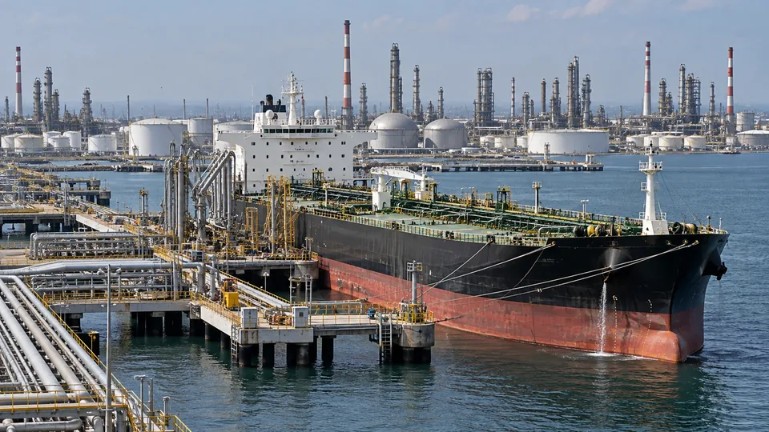

An Oil Shock Spreads Through Costs, Spending and Exchange Rates
Higher crude prices affect producers and consumers differently. Duration and the source of the shock shape the wider market response.

An oil-price shock redistributes income before it produces a clear direction for the stock market. Producers may earn more from each barrel, while households and transport businesses face a higher bill. The broader outcome depends on why oil became more expensive, how long the increase lasts and who can pass the cost to someone else.
The distinction between supply and demand is central. Stronger global activity can raise oil consumption and corporate sales together. A disruption that removes available supply can raise costs while weakening activity. The same percentage price increase can therefore carry a different economic message.
Identify the physical constraint
The EIA's oil-market framework separates production, consumption, inventories and expectations. A production loss is not automatically equal to the reduction in deliveries to end users. Stocks, spare production capacity, alternative routes and changes in demand can cushion or extend the disruption.
Replacing a barrel also involves quality and location. A refinery configured for particular feedstocks cannot necessarily substitute any available crude immediately at the same cost. Shipping and insurance can become part of the constraint. A benchmark futures quote provides useful price information but does not describe every buyer's delivered cost.
Follow the cost through a business
Consider a hypothetical carrier buying 100,000 gallons of fuel each month. An increase from $3 to $3.60 a gallon raises its bill from $300,000 to $360,000 if volume is unchanged. The additional monthly expense is $60,000. If customer surcharges recover $40,000, the company retains a $20,000 cost increase before other adjustments.
Recovery can lag the purchase. Contracts may reset monthly or quarterly, while fuel must be paid for immediately. Even a business eventually able to pass on the full increase can need more working capital. A company with hedges may experience a different timing, depending on the instruments, quantities and maturities involved.
Higher producer revenue is not the same as profit
For an illustrative producer selling 10,000 barrels a day, a $20 increase in its realized price adds $200,000 of daily gross revenue at unchanged output. That is not an equal increase in distributable cash. Royalties, taxes, hedges, operating costs and investment requirements still matter.
Refiners face a different calculation. Their margin depends on the selling prices of products relative to crude and processing costs. If crude becomes more expensive faster than gasoline or diesel, a refiner's margin can narrow. An energy-sector label alone is insufficient to establish who benefits.
Households adjust the rest of the budget
A household buying 60 gallons a month spends an additional $36 when the price rises by $0.60 a gallon. For 1 million otherwise identical households, that is $36 million redirected to fuel each month before changes in driving. This is a constructed example, not an estimate of national spending.
Some households reduce discretionary purchases; others save less or draw down cash. Higher-income households may adjust less than those with limited financial reserves. An inflation index measures price changes across a representative basket, while an individual family's experience depends on its own spending pattern.
Exchange rates can amplify the import bill
Suppose oil initially costs $80 a barrel and one dollar costs 0.90 units of an importer's currency. The local cost is 72 units. If oil rises to $100 and the dollar costs 0.95 local units, the bill becomes 95 units, an increase of about 31.9%. The currency movement compounds the dollar oil-price increase.
That example does not predict the exchange rate. Interest-rate expectations, financial flows and the country's other exports also affect its currency. Our EUR/USD guide explains why trade effects and financial-market effects can pull in different directions.
Distinguish a benchmark quote from a delivered fuel bill
A barrel benchmark is an input to many prices, not the final invoice for every fuel user. Refining, transport, taxes and contract terms can change the connection. A business may also have fixed part of its cost earlier. The same daily crude move can therefore reach two firms at different times and in different amounts. Evaluating the actual exposure requires the relevant fuel, delivery location and purchasing arrangement.
Markets price more than headline inflation
A persistent energy shock can lift measured inflation while reducing real purchasing power. Bonds then reflect competing expectations about inflation, growth, policy and demand for safety. Shares reflect the distribution of costs and revenues across companies. Neither gold nor crypto has a compulsory response to an oil headline.
The practical analysis begins with the disruption, available substitutes and the duration of higher delivered costs. The companion $100 oil scenario examines price-index arithmetic. A round barrel price alone cannot establish the scale of the economic damage or the central bank's response. The October 21 U.S. inventory report illustrates how crude and refined-product stocks can move in different directions.
Sources and methodology (3)
Primary references for the definitions, methods and risks discussed above. Examples labeled hypothetical or illustrative are not current market quotations.
TTN analysis for informational purposes. This article is not investment, tax or legal advice.